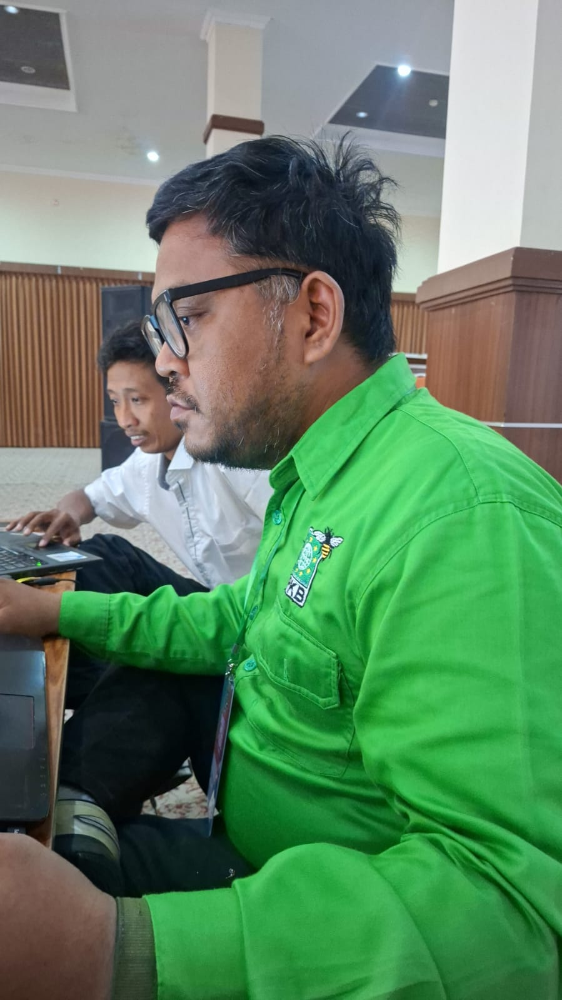

Dulu, supremasi politik diukur dari seberapa rimbun baliho menutupi langit kota dan seberapa keras panggung kampanye bergetar. Kini, ukuran itu usang. Pertempuran sesungguhnya telah berpindah ke layar enam inci di genggaman, tempat algoritma berkuasa dan memaksa kita merumuskan ulang makna memenangkan hati rakyat di tengah riuh rendah jagat maya.
Sebagai seseorang yang tumbuh dan berproses di tengah dinamika masyarakat akar rumput, saya menyaksikan berbagai fase transformasi politik di negeri ini. Namun, apa yang terjadi dalam satu dekade terakhir adalah lompatan kuantum yang mengerikan sekaligus menantang. Kita hidup di era ketika ruang diskursus publik telah dibajak oleh mesin. Kritik sosial saya bermula dari pengamatan empiris yang memprihatinkan terhadap wajah politik arus utama saat ini. Ketika ruang digital menjadi episentrum interaksi manusia, sebagian besar elit dan partai politik meresponsnya dengan cara yang sangat primitif, artifisial, dan merendahkan nalar. Mereka memperlakukan media sosial sekadar sebagai papan reklame digital yang diisi baliho elektronik, slogan-slogan kosong, atau lebih buruk lagi, menjadikannya medan perang bagi pasukan siber (buzzers) yang nir-etika.
Pendekatan konvensional dan gaya politik post-truth yang mengandalkan manipulasi emosi merupakan kegagalan struktural dalam memahami esensi zaman. Para politisi gaya lama ini masih mengidap ilusi mobilisasi fisik, berpikir bahwa melempar hoaks, menciptakan polarisasi, atau berjoget tanpa substansi di platform video pendek sudah cukup untuk merebut simpati. Mereka lupa bahwa lanskap demografi kita telah bergeser secara fundamental. Hari ini, anak-anak muda dari kelompok Milenial dan Generasi Z adalah pemegang saham mayoritas atas masa depan republik ini. Demografi muda ini tumbuh secara organik seiring dengan perkembangan teknologi. Mereka sangat rasional, memiliki akses tak terbatas terhadap informasi silang, sangat kritis, namun pada saat yang sama memiliki rentang atensi yang pendek dan sangat mudah bosan dengan kepalsuan.
Ketika ruang publik digital hanya diisi oleh ingar-bingar politik kosmetik, polarisasi yang memecah belah, dan narasi kebencian yang direkayasa oleh akun-akun anonim, anak-anak muda ini memilih bersikap apatis. Mereka mundur dari gelanggang partisipasi bukan karena mereka tidak peduli pada nasib bangsa, melainkan karena mereka muak melihat politik direduksi menjadi sirkus murahan di linimasa media sosial. Inilah akar masalahnya: kita mengalami krisis komunikasi politik yang sesungguhnya. Para pengambil kebijakan dan institusi kepartaian gagal menerjemahkan platform digital sebagai ruang edukasi publik, dan malah menjadikannya tempat sampah propaganda. Dengan demikian, jika status quo ini terus dibiarkan, kita tidak hanya akan kehilangan satu generasi pemilih, tetapi juga sedang meletakkan bom waktu bagi kehancuran rasionalitas demokrasi kita. Demokrasi yang sehat tidak mungkin tumbuh dari tanah algoritma yang beracun.
Untuk membongkar kebuntuan ini, saya mengajak kita semua membawa persoalan ini ke ranah yang lebih filosofis dan mendasar. Mari kita kembali pada pertanyaan esensial: apa sebenarnya fungsi hakiki politik dan komunikasi? Dalam tradisi intelektual dan spiritual yang saya yakini, komunikasi memiliki dimensi profetik. Menyampaikan informasi kepada publik (tabligh) bukanlah sekadar transfer data, melainkan sebuah amanah moral untuk menyampaikan kebenaran, mengedukasi akal budi, dan menebarkan hikmah kebijaksanaan. Ruang publik, entah itu berwujud alun-alun kota di masa lampau maupun platform digital di masa kini, adalah amanah ruang yang harus dijaga kesuciannya dari manipulasi dan kebohongan.
Jika kita merujuk pada pemikiran filsuf Jürgen Habermas tentang ruang publik (public sphere), ruang itu idealnya menjadi tempat di mana warga negara yang setara berkumpul secara bebas, berdiskusi secara rasional, dan melahirkan opini publik yang berbobot untuk mengawasi kekuasaan. Hari ini, ruang publik itu telah berpindah ke dalam server-server raksasa dan dikendalikan oleh algoritma kapitalisme pengawasan. Dengan begitu, pertanyaannya menjadi jelas: apakah kita, sebagai entitas politik dan sosial, akan membiarkan ruang publik baru ini dijajah oleh logika klikbait, disinformasi, dan hoaks politik? Tentu saja tidak. Meninggalkan ruang digital tanpa intervensi nilai-nilai moral sama saja dengan mengkhianati tugas peradaban.
Bagi entitas politik seperti Partai Kebangkitan Bangsa (PKB), yang secara historis memiliki akar sanad yang sangat kuat pada tradisi pesantren dan masyarakat pedesaan, adaptasi terhadap dunia digital tidak berarti tercerabut dari akar kulturalnya. Justru sebaliknya. Nilai-nilai universal tentang akhlakul karimah (etika luhur), tabayyun (verifikasi fakta), dan tawasuth (moderasi) yang selama ratusan tahun diajarkan melalui lembaran-lembaran kitab kuning di surau-surau, kini menemukan urgensinya untuk diterjemahkan ke dalam bahasa biner dan kode algoritma. Nilai-nilai universal kemanusiaan ini harus disuntikkan ke dalam pembuluh darah media sosial. Maka, kita membutuhkan sebuah teologi komunikasi digital, di mana setiap postingan, tweet, atau video yang diunggah oleh seorang kader politik memiliki pertanggungjawaban moral yang melampaui urusan elektoral semata. Politik, pada fitrahnya, adalah instrumen mulia untuk mengelola urusan publik. Ia harus dikembalikan ke relnya sebagai media pendidikan bagi rakyat.
Berangkat dari kesadaran filosofis dan sosiologis yang mendalam inilah, sebuah sintesis baru mutlak diperlukan. Kita membutuhkan paradigma alternatif yang mengawinkan kebijaksanaan tradisional akar rumput dengan supremasi penguasaan teknologi komunikasi modern. Dari kebutuhan itulah, sintesis ini kemudian menemukan wujud konkretnya pada hari Sabtu, 31 Oktober 2026. Bertempat di Balai Besar Penjaminan Mutu Pendidikan Jawa Timur, di jantung Kota Surabaya, Tim Media Dewan Pengurus Wilayah (DPW) PKB Jawa Timur mengambil langkah bersejarah dengan menyelenggarakan Digital Media Academy.

Saya hadir di sana, duduk bersama para kader muda struktural lainnya, mewakili Dewan Pengurus Cabang (DPC) tingkat kabupaten dan kota dari seluruh pelosok Jawa Timur. Sebagai Ketua Dewan Pengurus Anak Cabang (DPAC) PKB Kecamatan Rungkut, saya merasakan langsung denyut nadi transformasi ini. Pemilihan Kota Surabaya sebagai lokasi acara bukan sekadar pertimbangan logistik atau kemudahan akses geografis semata. Lebih dari itu, ia merupakan simbolisme yang kuat tentang keseriusan partai dalam membangun pusat komando komunikasi yang terintegrasi, responsif, dan berwawasan ke depan. Kota metropolis ini menjadi saksi bagaimana sebuah partai yang lekat dengan citra pedesaan berani membuktikan kelenturan adaptasinya yang luar biasa dalam menjangkau masyarakat perkotaan dan para pengguna internet yang aktif.
Apa yang terjadi di dalam Digital Media Academy bukanlah sekadar penataran teori komunikasi politik yang usang dan membosankan. Ini adalah laboratorium untuk merumuskan paradigma baru. Di sana, saya melihat bagaimana ratusan kader muda, dari latar belakang santri, aktivis kampung, hingga profesional muda, dididik dalam iklim pembelajaran yang sangat ketat, terukur, dan praktis. Pendekatan yang diimplementasikan sungguh komprehensif. Kami tidak diajari untuk menjadi barisan buzzer buta yang tugasnya hanya memaki lawan politik atau menyebarkan disinformasi demi meraih simpati murah. Sebaliknya, kami ditempa untuk menjadi intelektual digital.
Instruktur-instruktur yang dihadirkan memfasilitasi pemaparan materi strategis yang kemudian langsung dibumikan melalui metode diskusi kelompok terpumpun (Focus Group Discussion). Kami dibenturkan pada simulasi bedah studi kasus tentang bagaimana menangani krisis komunikasi, serta bagaimana meredam isu-isu hoaks politik yang kerap menciderai akal sehat demokrasi kita menjelang momen elektoral. Praktik produksi konten visual diajarkan dengan penekanan pada estetika yang humanis, sementara simulasi distribusi pesan dilakukan dengan mempelajari secara mendalam cara membaca celah algoritma secara akurat. Kami belajar bahwa untuk menembus dinding pertahanan kognitif pemilih muda yang kritis, pesan yang disampaikan harus faktual, solutif, dan yang terpenting: relevan dengan kegelisahan keseharian mereka.
Bagi saya pribadi, pengalaman di akademi ini memberikan bekal yang sangat berharga. Saat saya kembali ke Rungkut, berhadapan langsung dengan pemuda-pemudi karang taruna, anak-anak kos yang cemas akan lapangan pekerjaan, atau keluarga muda yang terjepit biaya hidup, saya menyadari bahwa kapasitas tim media di tingkat cabang sejatinya adalah ujung tombak peradaban partai itu sendiri. Melalui Digital Media Academy ini, kami dilatih secara taktis untuk menguasai manajemen isu, merumuskan pesan kampanye yang bukan sekadar janji di awang-awang, melainkan tawaran kebijakan faktual yang dapat diterima oleh nalar pemilih muda di wilayah kami masing-masing.
Ini adalah langkah konsolidasi yang menentukan. Melalui standardisasi kemampuan digital yang sistematis ini, seluruh perangkat struktur partai di Jawa Timur diproyeksikan memiliki keseragaman gerak dan kepaduan narasi. Dengan begitu, kami tidak lagi bergerak secara sporadis, melainkan berbaris rapi dalam ekosistem komunikasi yang kohesif. Program ini merupakan wujud nyata dari upaya membangun benteng pertahanan informasi yang kokoh. Di saat kekuatan oligarki atau kelompok kepentingan tertentu mungkin menyewa ribuan akun palsu untuk merusak ruang demokrasi, PKB Jawa Timur menjawabnya dengan mencetak tenaga strategis media yang mandiri, organik, objektif, dan kompetitif.
Sintesis ini membuktikan bahwa kita dapat merangkul masa depan tanpa harus meninggalkan semangat perjuangan di masa lalu. Paradigma baru ini mengubah posisi kader muda dari sekadar "pasukan pendorong motor" di jalanan, menjadi "arsitek persepsi" di dunia maya. Dengan infrastruktur komunikasi yang telah diperbarui dan kapasitas sumber daya manusia yang semakin terasah, kita siap menyongsong berbagai momentum elektoral di masa mendatang. Kita tidak akan lagi bertarung dengan cara-cara kotor yang merendahkan martabat manusia, melainkan dengan cara-cara inovatif yang mencerdaskan, mencerahkan, dan membawa kemaslahatan bagi masyarakat luas. Inilah jalan politik yang bermartabat; sebuah jalan untuk merebut kembali nalar publik dari cengkeraman algoritma yang hampa.
Warisan kebijaksanaan leluhur harus kita teruskan dalam format digital. Kita menolak untuk terjebak dalam hiruk-pikuk viral yang tidak bermakna. Saatnya pasukan digital turun ke gelanggang, membawa narasi edukatif, menjernihkan nalar publik, dan memastikan politik tetap menjadi jalan mulia untuk merawat kemanusiaan, akal sehat, dan masa depan peradaban.